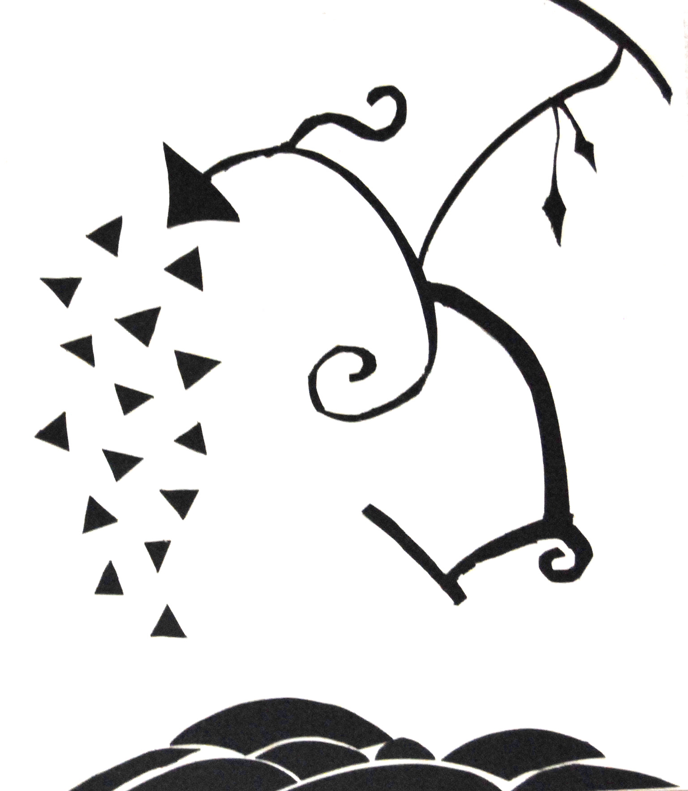
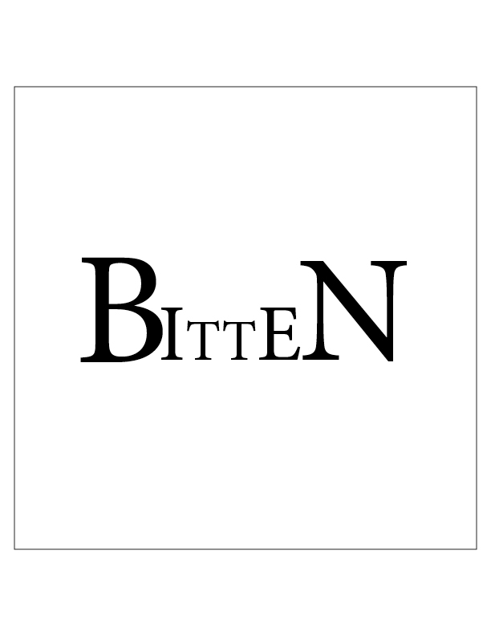

About Kim
Hey! My name is Kim Vroman and I’m a Creative Advertising and Media & Information major at Michigan State University, specializing in design. I’m originally from Trenton, Michigan, and the many art classes I took in high school are where I really found my passion for design. I have interests in everything art and design related, but my true love lies with photography, painting, and typography.
After I graduate, I plan pursue a career in web and graphic design. Owning my own company or just starting a small business is where I want to ultimately end up.
My Photography
My Graphic Design
- 
- 
-

Contact Me
If you have any questions, comments, or words for me, I can be reached at my school email. It gets checked at least once a day.
vromanki@msu.edu